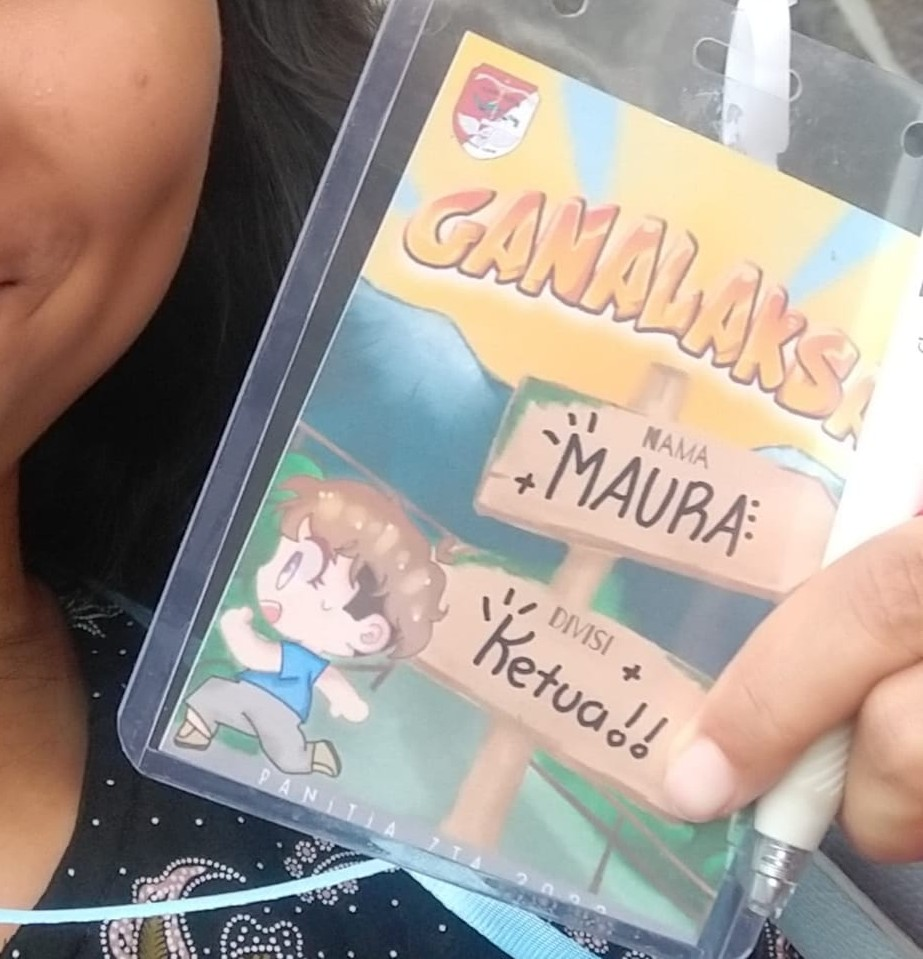
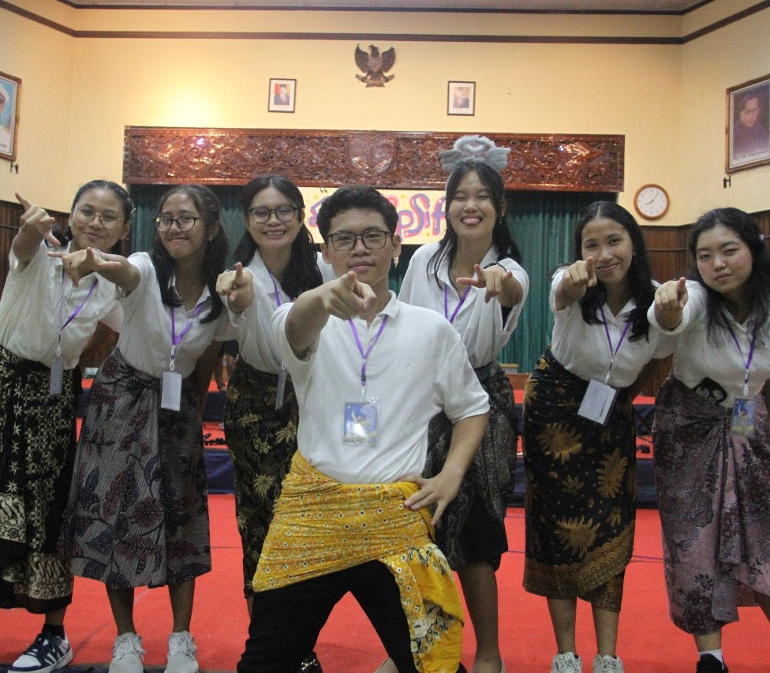
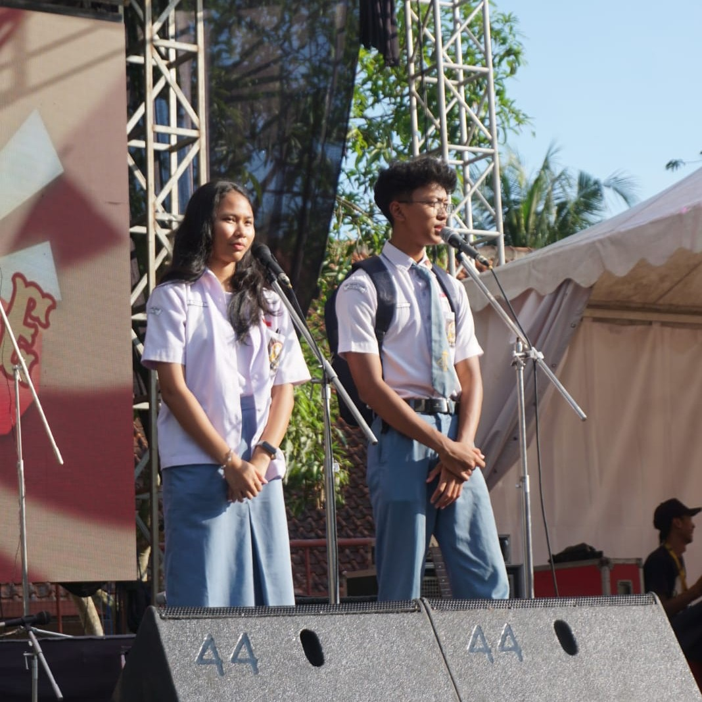

Cecilia Maura C. P.
Trying hard to try a lot of new things!
"It's hard to see the forest when we are stuck chopping down trees."
Trying hard to try a lot of new things!
"It's hard to see the forest when we are stuck chopping down trees."
Saat ini aku sedang menjalani program sarjana di Institut Teknologi Bandung dengan program studi Sistem dan Teknologi Informasi. Aku sedang memiliki ketertarikan untuk mempelajari tentang UI/UX design. Untuk kedepannya aku masih belum menentukan ingin menempuh jenjang karir yang seperti apa, masih mencoba untuk lebih banyak dan lebih berani eksplore banyak hal selama kuliah di ITB ini XOXO.
Jembatan komunikasi antara angkatan dan sekolah
Memastikan latihan berjalan dengan lancar
Mengelola event eksternal STEI-K 25
Mengelola proker UpSkill dan AI Integration

Ziarah tiga angkatan (ZTA) adalah kegiatan ziarah tahunan yang diselenggarakan di SMA PL VanLith.
MAPRASS adalah acara apresiasi seni tahunan yang diselenggarakan oleh sekolah. Aku mendapat bagian untuk mengatur tarian di setiap jeda penampilan supaya alur acaranya bisa tersampaikan dengan jelas. Walaupun aku merasa masih kurang bisa mengekskusinya dengan baik, aku merasa aku mendapatkan banyak sekali pelajaran dari acara ini. Hal paling utama yang aku dapatkan adalah untuk memaksimalkan acara meskipun dengan sumber daya seminimal mungkin. Karena seperti kalimat yang sering kita dengar "the less the better".


Farewell angkatan merupakan acara tahunan yang diselenggarakan oleh para siswa/siswi tahun ketiga untuk berpamitan dengan adik kelas dan juga para pendamping maupun staf sekolah. Tantangan terbesarku adalah bagaimana caraku untuk mengimbangi tugasku sebagai ketua acara dan juga sebagai siswi yanng sebentar lagi lulus. Puji Tuhan semuanya bisa berjalan dengan lancar. Satu hal yang aku pelajari adalah jangan terlalu memaksakan suatu hal yang konsepnya masih kurang matang karena akan berakhir menjadi sia-sia.
2025 adalah tahun yang paling hectic menurut aku karena awal tahun udah harus mikirin farewell angkatan. Abis lulus masih mikirin UTBK. Abis UTBK mikirin pretest. Abis pretest mikirin TPB alongside with TEC. Tapi Puji Tuhan aku belum pernah telat melakukan sesuatu -- except lupa pencet submit di Edunex. Aku selalu menjadwalkan apa yang bakal aku lakuin besoknhya biar ga buang-buang waktu gitu aja, escpecially kalo besoknya libur, aku ngerasa kalo aku santai-santai padahal banyak hal yang bisa aku lakuin aku bakalan nyesel banget. Walaupun kadang agak miss sedikit but atleast aku udah bisa time manaagement dengan benar. Bahkan, selama TPB aku ga pernah sakit sama sekali which is blessing for me karena biasanya pas SMA aku bakalan langsung sakit kalo udah sibukk banget.
Berbagai pengalamanku dalam berorganisasi membuatku bisa melakukan kerja sama tim dengan lebih baik dari waktu ke waktu. Aku juga selalu mengimplementasikan pengalaman berorganisasi ku ke dalam kehidupan perkuliahan seperti saat kerja kelompok. Contohnya, setiap kerja kelompok aku selalu langsung membagi tugas se-adil mungkin supaya semuanya mendapatkan tugas dan tidak "matil", sejauh ini cara ini masih selalu berhasil sehingga aku merasa ini lumayan efektif. Tapi kalau misalkan timnya berisikan orang-orang yang aktif, aku biasanya mengikuti ritme mereka saja supaya pekerjaannya bisa dikerjakan dengan lebih maksimal sesuai dengan spesialisasi mereka.
Beberapa pengalamanku menjadi ketua panitia suatu acara benar-benar membentuk bagaimana aku bersikap sebagai seorang "leader". Aku juga sadar bahwa masih banyak sekali aspek dalam diriku yang masih perlu ditingkatkan lagi untuk bisa menjadi seorang "leader" yang baik. Untuk saat ini aku masih berusaha untuk memperbaiki aspek-aspek yang masih kurang tersebut supaya kedepannya bisa menjadi lebih baik lagi.